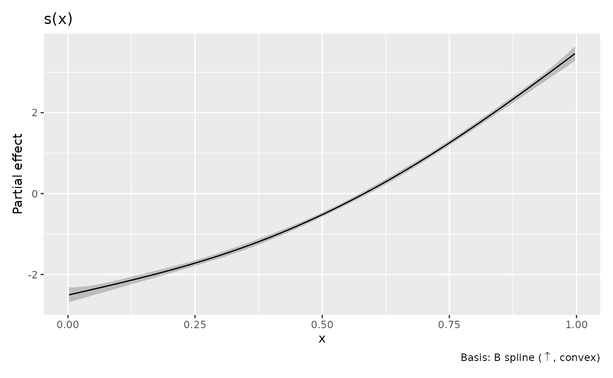
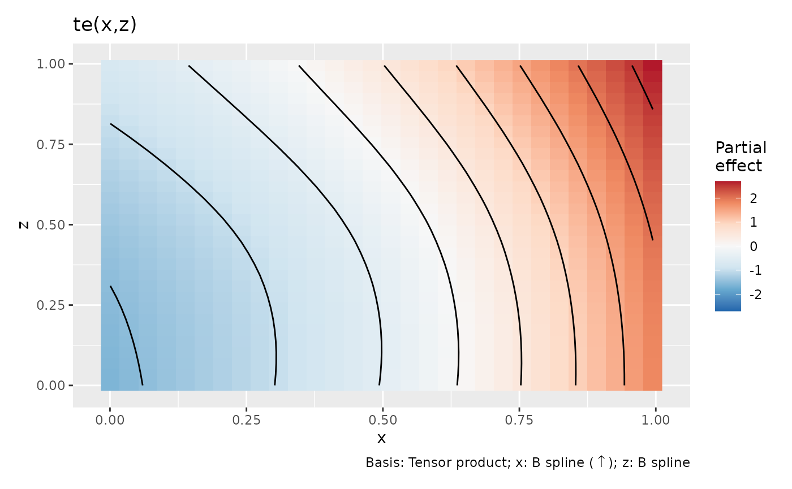

Intervals for shape-constrained smooths
Source:vignettes/articles/shape-constrained-intervals.Rmd
shape-constrained-intervals.RmdA fitted increasing or convex smooth can have interval endpoints that lack the fitted shape. gratia provides two ways to use shape restrictions in uncertainty calculations: transform the endpoints of an initial band, or retain an explicit set of admissible coefficient vectors. These answer different questions. The first supplies shaped endpoint curves on an evaluation grid; the second describes whole functions satisfying coefficient restrictions, including equalities.
Shape enforcement and initial uncertainty
shape_intervals() accepts estimates and existing
endpoints independently of any model. It first applies a zero lower
bound when requested, then sorts values along each monotone coordinate,
then takes the greatest convex minorant along one curvature coordinate.
The greatest convex minorant is the largest convex curve lying below the
supplied values. Concavity uses its negative counterpart. This follows
the operator approach of Chen and colleagues
(2021), building on monotone
rearrangement.
x <- c(0, 0.1, 0.35, 0.7, 1)
estimate <- c(0.1, 0.3, 0.2, 0.8, 1.1)
shaped <- shape_intervals(
estimate, estimate - 0.3, estimate + 0.3,
data = data.frame(x = x), constraints = list(x = c("m+", "c+")),
interval = "simultaneous", level = 0.95
)
shaped
#> # A tibble: 5 × 4
#> x .estimate .lower_ci .upper_ci
#> <dbl> <dbl> <dbl> <dbl>
#> 1 0 0.1 -0.2 0.4
#> 2 0.1 0.157 -0.143 0.457
#> 3 0.35 0.3 0 0.6
#> 4 0.7 0.731 0.431 1.03
#> 5 1 1.1 0.8 1.4
attr(shaped, "interval_info")
#> $method
#> [1] "shape"
#>
#> $level
#> [1] 0.95
#>
#> $interval
#> [1] "simultaneous"
#>
#> $source
#> [1] "supplied"
#>
#> $correction
#> [1] "none"
#>
#> $shape
#> $shape$x
#> [1] "m+" "c+"
#>
#>
#> $operator
#> [1] "range, rearrangement, directional convex minorant"
#>
#> $domain
#> [1] "evaluation grid"
#>
#> $scope
#> [1] "grid"
#>
#> $coverage
#> [1] "whole-grid containment preserved"
#>
#> $pointwise_calibration
#> [1] "not requested"
#>
#> $interpretation
#> [1] "inherited from input"The interval type and level describe the supplied band; this
illustrative input has no statistical calibration. The returned table
contains .estimate, .lower_ci and
.upper_ci, with method information in
interval_info.
The supported codes are "+" for nonnegative values,
"m+" and "m-" for increasing and decreasing
values, and "c+" and "c-" for convexity and
concavity. Increasing and decreasing include flat sections. A complete
Cartesian grid can have monotonicity in several directions and curvature
in at most one direction. These are directional restrictions: convexity
along one coordinate does not establish joint convexity of a
surface.
Rows may be unordered and coordinates may be irregularly spaced. Convexity uses slopes computed from actual coordinate differences. Sorting assigns equal mass to each distinct grid coordinate; on an irregular grid this is an empirical rearrangement, with no claim about distance measured uniformly across the coordinate domain. Duplicate grid rows and incomplete product grids are rejected.
What the transformation guarantees
Write T for the complete shape operator and f for target values satisfying the requested shape on the grid. The operator preserves order and fixes f. Consequently,
L \leq f \leq U \quad\Longrightarrow\quad T(L) \leq T(f)=f \leq T(U),
where each inequality holds at every grid point together. Thus every instance in which the initial band covers the entire grid remains covered after transformation. The maximum width over the grid cannot increase, although the width at an individual point can increase.
This implication does not establish nominal coverage for the initial
band. In particular, transforming separately calibrated pointwise limits
does not preserve their marginal coverage at each point: sorting moves
information between coordinates. interval = "pointwise"
records this source calibration without assigning new pointwise coverage
to the result. Penalization bias or an inadequate covariance
approximation can also affect initial coverage; the shape operation does
not correct either problem.
The coverage statement concerns the evaluation grid. Connecting the returned points by straight lines preserves the named curve shapes, but does not extend coverage to every point between them. Nor do the transformed values necessarily represent a spline in the original fitted basis or satisfy its centring equalities.
What the validation simulations showed
The reproducible experiment in
notes/scasm/shape-coverage.R separates known-variance
Gaussian calibration from fitted scasm uncertainty. It uses 2,000
repetitions per known-Gaussian scenario and 400 attempted fits per scasm
scenario, including exactly flat and exactly linear truths. At 95%
coverage, the binomial Monte Carlo standard error is about 0.5
percentage points for 2,000 repetitions and 1.1 percentage points for
400 successful fits. The scasm experiment applies the low-level operator
to fitted response curves including their intercepts, giving each
simulated truth a fixed reference level.
For a nearly flat increasing truth, the smallest marginal coverage over grid points fell from 93.65% to 38.00% after transforming Gaussian pointwise limits. Using an initially calibrated simultaneous band, whole-grid coverage instead changed from 94.85% to 95.75%. No originally covering whole-grid band lost coverage in any of the 49,182 paired transformations across the experiment. These are empirical checks of the event-inclusion result, rather than a reason to interpret transformed pointwise limits as calibrated intervals.
The scasm examples also show that shape enforcement retains limitations of the initial uncertainty. For a nearly binding increasing, convex truth, the transformed Gaussian simultaneous band covered the whole grid in 313 of 342 returned fits: 91.52%, with Monte Carlo standard error 1.51 percentage points. The other 58 attempts raised upstream fitting errors, so this estimate is conditional on a model being returned. The saved reports record all errors and warnings and distinguish them from interval calculations. Comparing selected smoothing with a small fixed penalty also changed local bias. The small-penalty comparison records estimates only; it does not assess interval width or separate smoothing bias from the effects of a finite spline basis and binding restrictions. Enforcing shape supplies no additional correction for smoothing bias.
An increasing, convex scasm smooth
For supported mgcv::scasm() components, select the
transformation explicitly with interval_method = "shape".
The default initial source is Gaussian:
shape_source = "gaussian". Existing interval defaults are
unchanged.
set.seed(1701)
d <- data.frame(x = runif(200))
d$y <- 2 * d$x + 4 * d$x^2 + rnorm(nrow(d), sd = 0.2)
m <- scasm(
y ~ s(x, bs = "sc", xt = c("m+", "c+"), k = 6),
data = d, bs = 0
)
curve <- smooth_estimates(
m, select = "s(x)", interval = "simultaneous",
interval_method = "shape", shape_source = "gaussian",
n = 100, n_sim = 2000, seed = 1702
)
draw(curve)
This displays the smooth component on its model scale. The intercept
is not added. scasm components use component-only
uncertainty by default; an explicit request for
overall_uncertainty = TRUE is rejected for shape intervals.
Arbitrary effect shifts and transformations are also rejected, because
they can change the asserted shape. Standard errors retained in the
result describe the initial uncertainty calculation; transformed
endpoints are not reconstructed from a standard error and a Gaussian
critical value.
Default plot captions show the basis and named shapes. The interval
source, level and coverage information remain in the result’s
interval_info attribute and in this documentation.
By default the Gaussian source uses the model’s approximate Bayesian
covariance. frequentist = TRUE instead requests the
frequentist covariance. Neither choice constructs a posterior restricted
to the feasible coefficient space. An interpretation as posterior
probability requires an initially calibrated posterior region and a
posterior supported on the stated shapes. unconditional
retains its existing meaning for the initial covariance calculation,
including the model’s availability of smoothing-parameter uncertainty
corrections; it adds no new calibration to shape enforcement.
The same method selection is available through draw(),
assemble() and confint() for supported smooth
components. For example,
draw(m, interval = "simultaneous", interval_method = "shape", n_sim = 2000, seed = 1702)
computes and displays the intervals in one call. Select only eligible
terms: every selected smooth must have named restrictions actually
retained by the fitted model. General coefficient constraints belong in
an explicit set, as described below. Numeric by variables
are unsupported, because multiplying a component by a varying value
changes its shape.
General pc inequalities can replace the named
coefficient restrictions in mgcv while leaving the original
xt request in the fitted object. Captions identify that
request as not retained, and automatic shape intervals reject it.
Ordinary point equalities that leave the named inequalities intact are
supported. Derivative-valued bases are rejected: their values do not
inherit the named shape of the original spline.
For transformed covariates, shape is asserted in the coordinates used
by the model. For example, a restriction on s(log(x), ...)
concerns log(x); curvature in that coordinate need not be
curvature in x.
A tensor with a constrained direction
Tensor restrictions require particular care: retained coefficient
inequalities alone do not imply the named shape when complementary basis
functions can be negative. Automatic shape inference therefore accepts
unreparameterized univariate B-spline margins, fitted with
np = FALSE, within their basis domains. Both
"sc" and ordinary "bs" margins can be used in
this supported construction.
set.seed(1703)
surface_data <- data.frame(x = runif(300), z = runif(300))
surface_data$y <- exp(1.5 * surface_data$x) + surface_data$z^2 +
rnorm(nrow(surface_data), sd = 0.15)
surface_model <- scasm(
y ~ te(x, z, bs = c("sc", "bs"), k = c(5, 5),
xt = list("m+", NULL), np = FALSE),
data = surface_data, bs = 0
)
surface <- smooth_estimates(
surface_model, select = "te(x,z)", interval = "simultaneous",
interval_method = "shape", n_2d = 30, dist = 0,
n_sim = 2000, seed = 1704
)
draw(surface)
The surface and its endpoints increase with x at fixed
z; no restriction is imposed in z.
dist = 0 retains the complete product grid needed by the
operator. Removing points distant from observations would leave missing
slices. Evaluation outside the fitted B-spline domains is rejected.
Automatic curvature inference additionally requires regular knots and
a sufficient spline degree. In mgcv 1.9-4, the raw second coefficient
differences used by "c+" and "c-" do not
ensure spline curvature with arbitrary irregular knots. Equal spacing is
checked to rounding precision, because even small departures can reverse
curvature when a coefficient restriction binds. Requests with those
knots are rejected. The low-level operator can still enforce a justified
shape directly on an irregular evaluation grid; that is a separate
statement from the shape implied by fitted inequalities. Requests for
multiple curvature directions are also rejected because a later
convexification can destroy curvature enforced in an earlier
direction.
How this differs from stored bootstrap limits
With bs > 0, a scasm fit stores feasible bootstrap
coefficient columns in model$bs. Its bootstrap holds
smoothing parameters fixed and perturbs a final working likelihood
problem. Native intervals evaluate those columns, take pointwise
percentiles and, when svar.only is present, adjust
endpoints using the mean difference between Bayesian and frequentist
standard errors. Percentiles of convex functions need not be convex, and
the endpoint adjustment can alter restrictions further.
interval_method = "shape", shape_source = "bootstrap"
applies the same shape operators to these native pointwise limits. It
requires valid stored draws; simultaneous bootstrap bands remain
unsupported. No additional bias correction is introduced. This source
requires frequentist = FALSE and
unconditional = FALSE, matching the stored draws and native
correction. Feasibility of the draws does not establish coverage of
their percentiles: Andrews (2000) shows
that bootstrap calibration can fail at parameter boundaries. Applying a
shape operator preserves whole-grid coverage events already present,
without repairing their probability.
Equalities and coupled coefficient restrictions
An integral equality cannot generally be assigned to two different ordered endpoint curves. If both have integral one and their difference is nonnegative, that difference must have integral zero. A useful uncertainty description instead retains a set of whole functions.
shape_confidence_set() stores the intersection
\{b: L\leq Xb\leq U,\quad A_{\mathrm{in}}b\geq b_{\mathrm{in}}, \quad Cb=d\}.
Here is a three-coefficient example representing the values of a
piecewise linear curve at x = c(0, 0.5, 1). The positive
weights below give its exact integral over [0, 1], which is
required to equal one. A spline analysis would supply its own prediction
matrix and integrals of basis functions.
weights <- c(0.25, 0.5, 0.25)
region <- shape_confidence_set(
X = diag(3), lower = c(0, 0, 0), upper = c(2, 2, 2),
Ain = diag(3),
C = matrix(weights, nrow = 1), d = 1,
level = 0.95, interpretation = "confidence", band_type = "simultaneous"
)
in_shape_set(region, c(0.5, 1, 1.5))
#> [1] TRUE
in_shape_set(region, c(0.5, 1, 1))
#> [1] FALSEThe level and band type again record the caller’s calibration. On a
feasible true coefficient vector, intersection preserves exactly the
initial band’s coverage event. Pointwise limits alone do not provide a
simultaneous region. in_shape_set() checks candidate
vectors with a documented absolute tolerance; it neither samples the set
nor optimizes over it. Construction does not test whether the
restrictions define an empty set. Coordinatewise extrema of the set need
not themselves satisfy its equalities.
The set representation supports linear equalities and coupled inequalities without replacing them by shaped endpoints. Ellipsoidal initial regions, optimization of bounds over the admissible set and constrained posterior sampling are separate extensions. A Bayesian sampler would need to specify and sample a posterior supported on the coefficient restrictions; see Hazelton and Turlach (2011) for shape-constrained penalized splines. Likewise, Dümbgen (2003) constructs calibrated bands using multiscale tests in a Gaussian white-noise model. Those calibration results are distinct from the finite-grid endpoint transformation implemented here.